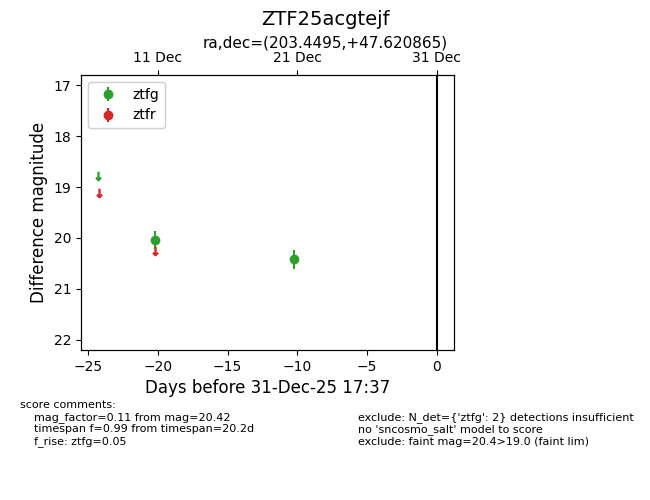
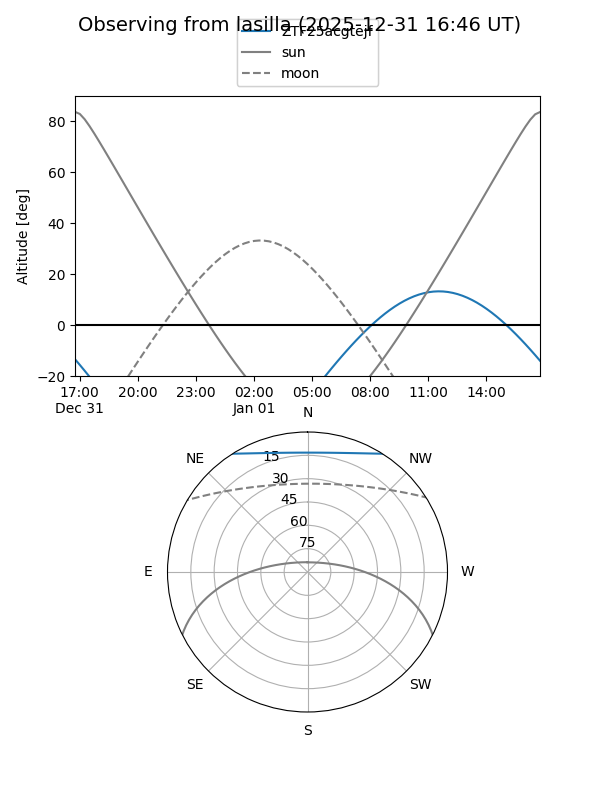
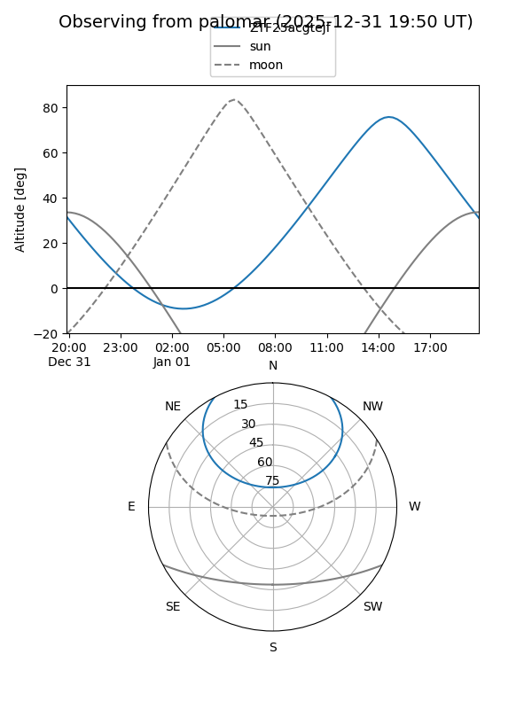

ZTF25acgtejf
Target ZTF25acgtejf at 2025-12-31 17:00
Aliases and brokers:
FINK:
Lasair:
ALeRCE:
alt names
ZTF25acgtejf (ztf,fink_ztf)
Coordinates:
equatorial (ra, dec) = 203.4495,+47.62086
equatorial (HMS+DMS) = 13:33:47.89,+47:37:15.11
galactic (l, b) = (103.7121,+67.89560)
Flags:
Photometry:
last ztfg=20.42
2 ztfg detections
Lightcurve

Visibility


Additional plots